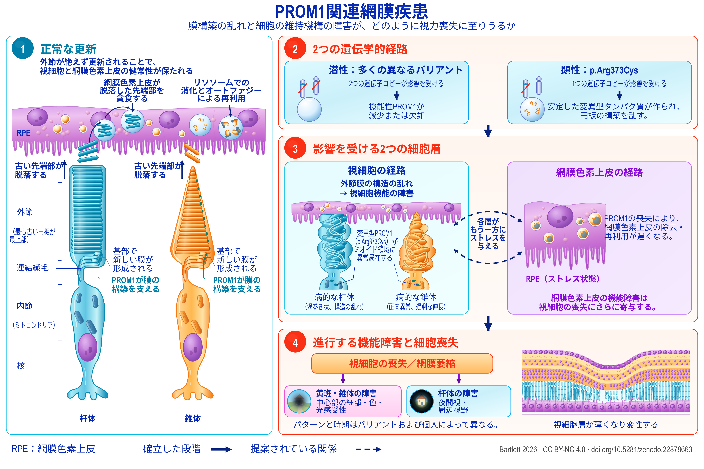

Review
PROM1関連網膜変性
アレルの違いを踏まえた病態機序・介入・研究優先課題のエビデンスマップ
English title: PROM1-associated retinal degeneration
Working paper, version 1.90, 21 September 2026.
The Zenodo record also holds an accessible HTML edition, a spoken-text version, a description of the figure and an audiobook.
Abstract
PROM1関連網膜変性には、顕性(優性)遺伝の黄斑疾患と、潜性(劣性)遺伝でしばしばより広範に及ぶ視細胞変性が含まれる。遺伝形式と臨床像の違いから、病態機序と治療についてそれぞれ異なる問いが生じる。本レビューおよびエビデンスマップは、臨床遺伝学、自然歴、膜生物学、視細胞および網膜色素上皮(RPE)のモデル、前臨床介入、ならびに日付を明示したヒト研究の記録を統合する。臨床応用に向けた最も確かな進展は、患者由来オルガノイドとノックアウトマウスで示された、PROM1欠損実験系におけるレスキューである。発症後の効果は、全文を確認したマウス研究と、それとは別の学会抄録で報告されている。なお未解決の主要課題は、顕性変異による疾患への適用であり、遺伝子補充、変異型の抑制、両者の併用を直接比較する必要がある。病態機序に関する文献は外節の形態形成だけにとどまらない。RPEを直接調べた実験はオートファジーフラックスと外節のクリアランスの関与を示し、光感受性の高いノックアウトモデルはエンドセリン、インスリン様成長因子1(IGF1)、代謝ストレスの関与を示している。これらの経路は細胞区画ごとに解釈する必要がある。ヒトの定量的自発蛍光所見は、ビスレチノイド過剰をすべての症例に共通する説明とすることに制約を与える。また、他の網膜疾患遺伝子型では局所のエンドセリンに保護作用が認められるため、この経路を一律に有害と扱うことには反する。臨床評価項目もこれに応じて層別化される。顕性疾患の萎縮拡大、潜性疾患のエリプソイドゾーン縮小、光干渉断層撮影(OCT)による網膜各層の菲薄化は、それぞれ異なる過程を測定し、床効果も異なる。遺伝学的な適格基準にPROM1を明記している、あるいはより広い遺伝学的基準を設けているヒト研究では、PROM1疾患の患者が参加できる場合がある。しかし、その大半について記録が示すのは、誰が参加し得るかであって、誰が実際に参加し、その後どうなったかではない。7つの実験研究計画では、こうした区別を検証可能な比較へと結び付け、それぞれについて結論を左右する比較、解釈を誤らないために必要な措置、その比較によって判断できる事項を示す。この枠組みにより、治療候補をアレル、細胞区画、病期に応じて区別できる。


Description of the figure
PROM1関連網膜疾患。現在の理解に基づく暫定的な病態モデル。外節の更新とそれを妨げる要因（1、2）、影響を受ける2つの細胞区画（3）、その結果として生じる視機能の喪失（4）を示す。破線は、確立した関係ではなく仮説として提案されている関係を表す。各要素の根拠は第3～10節に示す。
パネル1：正常な更新。網膜色素上皮の下に、杆体と錐体の視細胞が並んでいる。それぞれ上から、外節（最も古い円板が最上部）、連結繊毛、ミトコンドリアを含む内節、核と表示される。各外節の基部で新しい膜が形成され、PROM1がその構築を支える一方、最も古い先端部は上方へ脱落する。網膜色素上皮は脱落した先端部を貪食し、リソソームでの消化とオートファジーによる再利用によって分解する。
パネル2：2つの遺伝学的経路。左は潜性（劣性）疾患で、多くの異なるバリアントがあり、2つの遺伝子コピーが影響を受け、機能性PROM1が減少または欠如する。右は顕性（優性）疾患p.Arg373Cysで、1つの遺伝子コピーが影響を受け、そこから安定した変異型タンパク質が作られ、円板の構築を乱す。
パネル3：影響を受ける2つの細胞層。左は視細胞の経路で、外節膜の構造の乱れが視細胞機能の障害につながる。病的な杆体は渦巻き状で構造が乱れ、病的な錐体は配向が異常で過剰に伸長したものとして描かれ、変異型PROM1（p.Arg373Cys）はミオイド領域に異常局在する。右は網膜色素上皮の経路で、PROM1の喪失によって同層の除去・再利用が遅くなり、ストレスを受けた状態として描かれ、その機能障害が視細胞喪失にさらに寄与する。2つの枠の間を破線矢印が往復し、「各層がもう一方にストレスを与える」と示す。破線は確立事項ではなく提案された関係を意味する。
パネル4：進行する機能障害と細胞喪失。視細胞の喪失と網膜萎縮に続き、2つの方向に分岐する。黄斑・錐体の障害は中心部の細部、色、光感受性に影響し、杆体の障害は夜間視と周辺視野に影響する。パターンと時期はバリアントおよび個人によって異なる。隣の断面図は、視細胞層が薄くなり変性する様子を示す。
凡例。実線矢印は確立した段階を示す。破線および破線矢印は提案されている関係を示す。
Download the figure (PNG, 5400 × 3600 pixels, CC BY-NC 4.0)
How to cite
Bartlett C. PROM1関連網膜変性：アレルの違いを踏まえた病態機序・介入・研究優先課題のエビデンスマップ. Version 1.90. Zenodo, 21 September 2026. https://doi.org/10.5281/zenodo.22878663